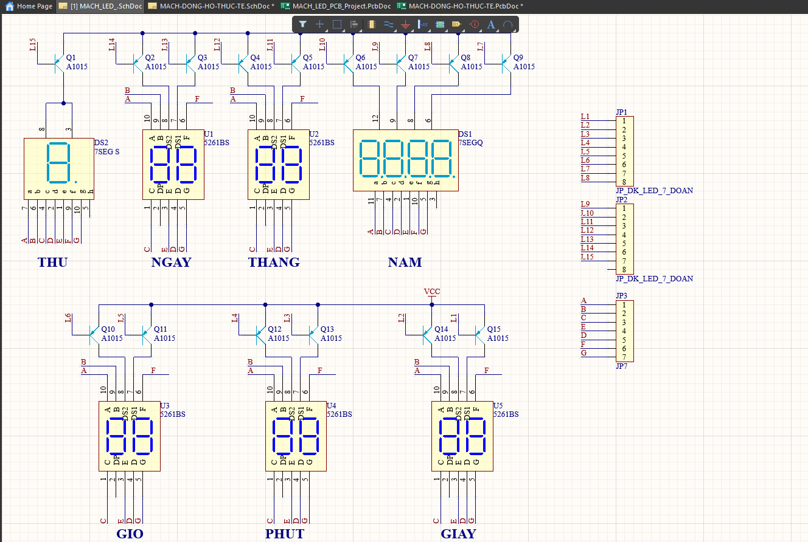
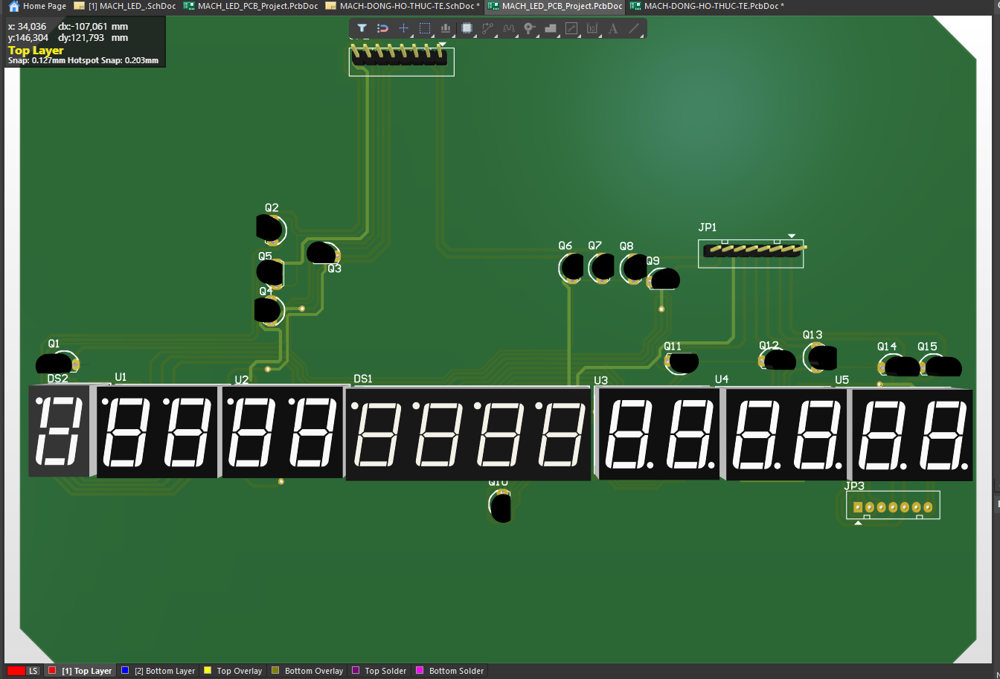
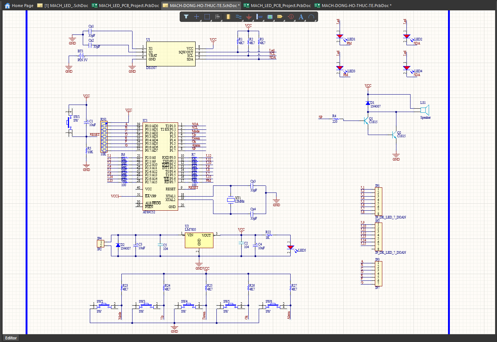
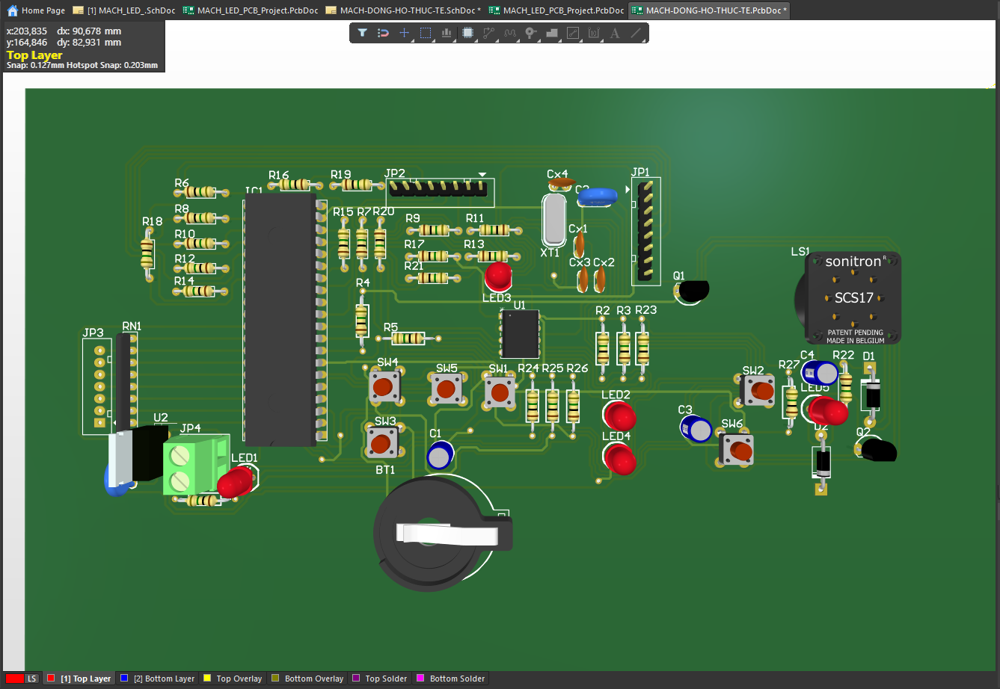
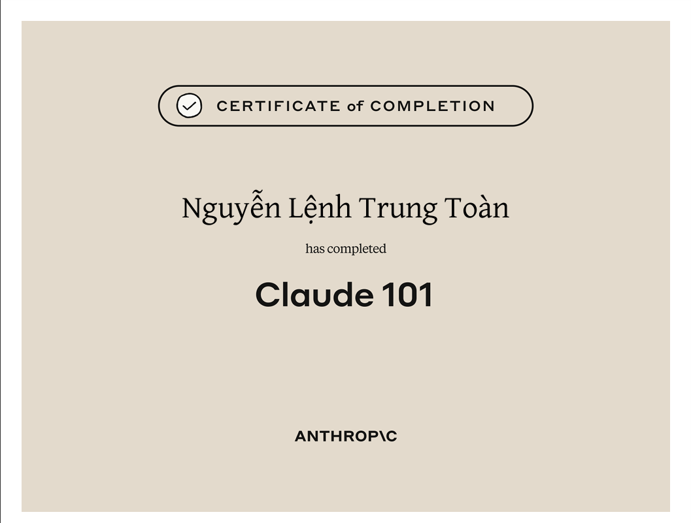

Skills
Experience in Semiconductor
Self-studied STM32 microcontroller programming and embedded systems
Testing and troubleshooting electronic circuit boards in Altium Designer software
Simulating chips
Designed PCB layouts (LED/resistor circuits) using Altium Designer software.
Programming Languages: Python, HTML, CSS, Javascript




Cybersecurity & Systems
Self-taught OS installation and configuration (Windows, Kali Linux).
Conducted static and dynamic malware analysis using Ghidra, x32dbg, ProcMon, and FakeNet-NG.
Analyzed real-world ransomware samples (GandCrab, LockBit Black, Expiro) in isolated lab environments.
Studied network traffic analysis using Wireshark.
Built and maintained a dedicated malware analysis lab using VMware Workstation.
Analysis tools: VMWare, Ghidra, x32dbg and x64dbg, Wireshark, Kali Linux

Time Management
Clearly allocate time across academic, project, and personal development tasks.
Prioritize deadlines effectively using structured task management systems.
Consistently deliver assignments on time while maintaining quality standards.
Software tools for time management: Google Calendar, Todoist and Microsoft To Do

Certifications
Certificate's Simplilearn C++
Issued on date: 09/07/2026 (MM/DD/YYYY)
View Certificate: https://certificates.simplicdn.net/share/10703639_10984639_1788790645453.pdf
Certificate's AI Anthropic
Issued on date: 11/08/2026 (MM/DD/YYYY)
View Certificate: https://verify.skilljar.com/c/psnygmixr237
